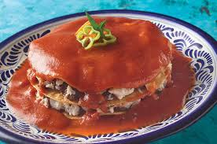
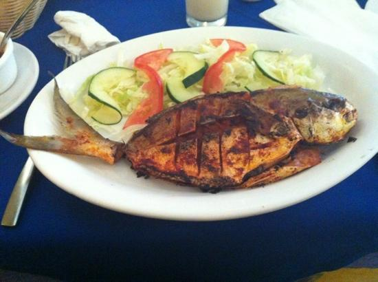
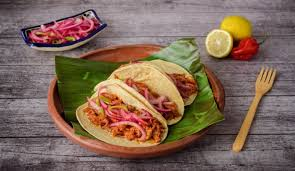
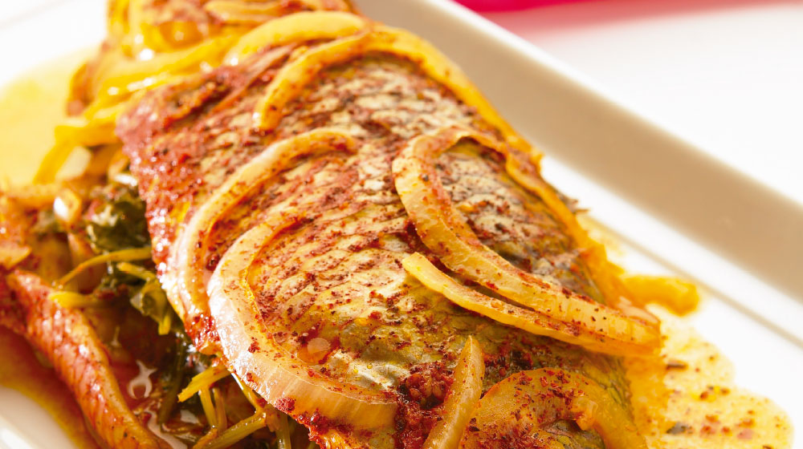
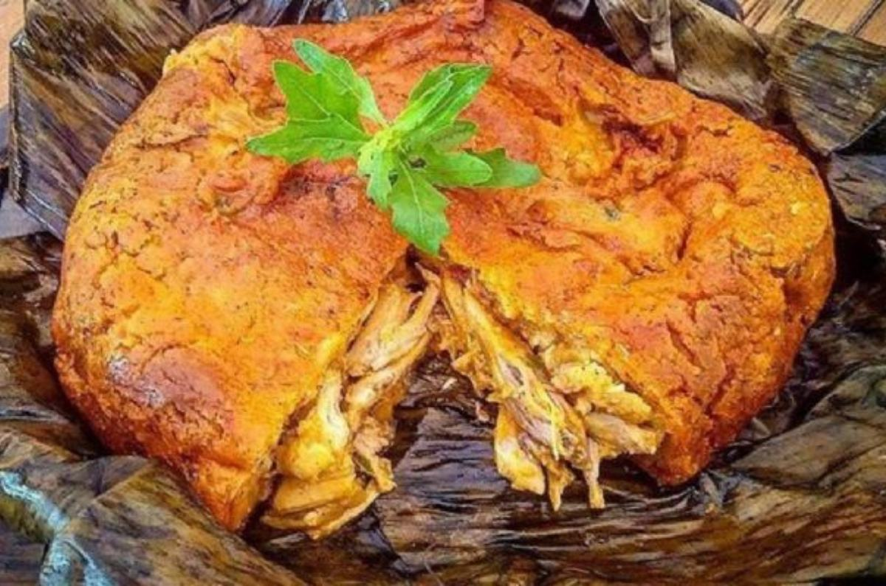

Los 5 platillos típicos más representativos de Campeche son:
Pan de cazón
Platillo emblemático hecho con tortillas, carne de cazón, frijoles y salsa de tomate con chile.

Pescado a la campechana
Pescado preparado con jitomate, cebolla, chile y especias regionales.

Cochinita pibil
Carne de cerdo marinada con achiote y naranja agria, cocida lentamente.

Pámpano en escabeche
Pescado marinado con vinagre, cebolla y especias, muy tradicional en la costa.

Pibipollo (mucbipollo)
Gran tamal relleno de carne y cocido bajo tierra, típico de las celebraciones de Día de Muertos.
